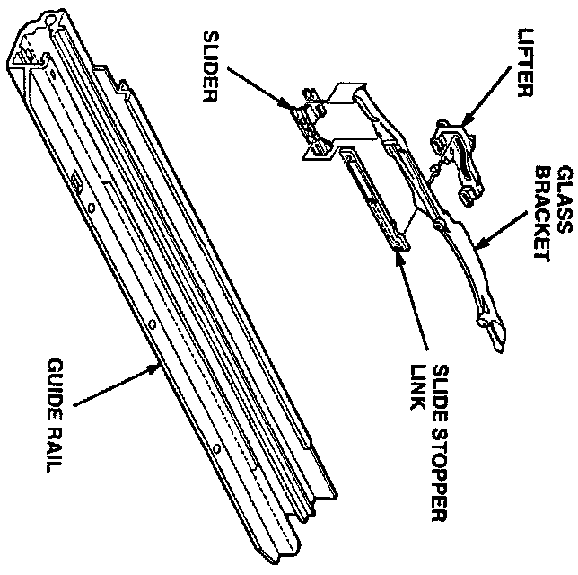
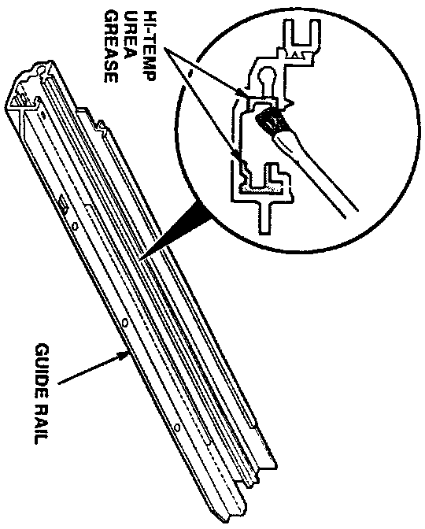

Moonroof - Chatters While Opening or Closing
November 1, 1994BULLETIN NO.:
94-017
YEAR
1994 - 95
MODEL
INTEGRA
VIN APPLICATION
ALL
Moonroof Chatter While Opening or Closing
SYMPTOM
The moonroof chatters or shudders when it is being opened or closed.
PROBABLE CAUSE
The lifters and sliders lack lubrication.
CORRECTIVE ACTION
Clean the guide rails and sliders, then lubricate them with hi-temp urea grease (see REQUIRED MATERIALS).
1. Remove the moon roof frame assembly from the car. Refer to the service manual: Hatchback, page 20.80; Sedan, page 20-87.
2. Disassemble the moonroof frame assembly as shown in the service manual.

3. Thoroughly clean the guide rails, lifters, sliders, slide stopper links, and glass brackets in solvent. Flush them with brake cleaner, and dry them completely.
4. Inspect all parts for wear. Replace any that are worn.

5. Using a clean brush, coat the channels in the guide rails with hi-temp urea grease.
6. Apply a light coat of hi-temp urea grease to the contact surfaces and pivot points of the lifters, sliders, slide stopper links, and glass brackets.
7. Reassemble the moonroof frame assembly.
8. Reinstall the moon roof frame assembly in the car. Test the moonroof for smooth operation.
REQUIRED MATERIALS
Hi-temp urea grease: P/N 08798-9002
WARRANTY CLAIM INFORMATION
In warranty:
The normal warranty applies.
Out of warranty:
Any repair performed after warranty expiration may be eligible for goodwill consideration by the District Technical Manager or your Zone Office. You must request consideration, and get a decision, before starting work.
Operation number: 814010
Flat rate time: 2.1 hours
Failed P/N: 70200-ST7-003
Defect code: 030
Contention code: B07